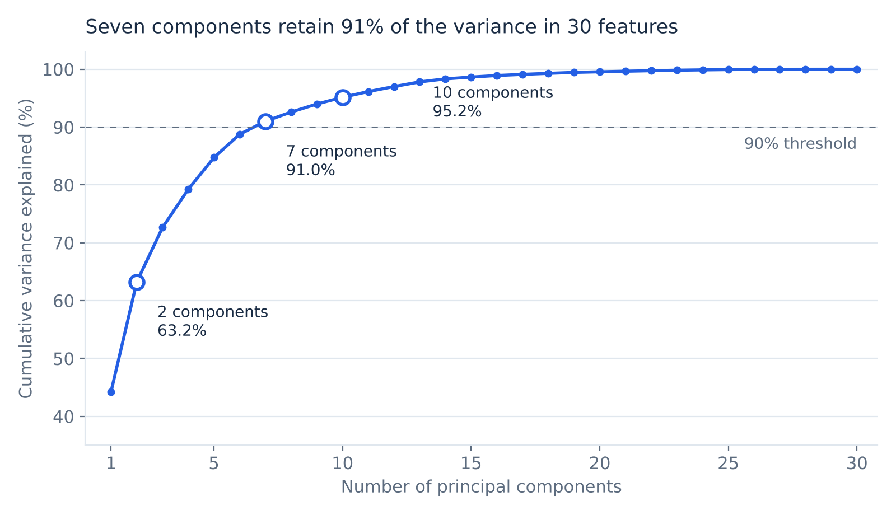
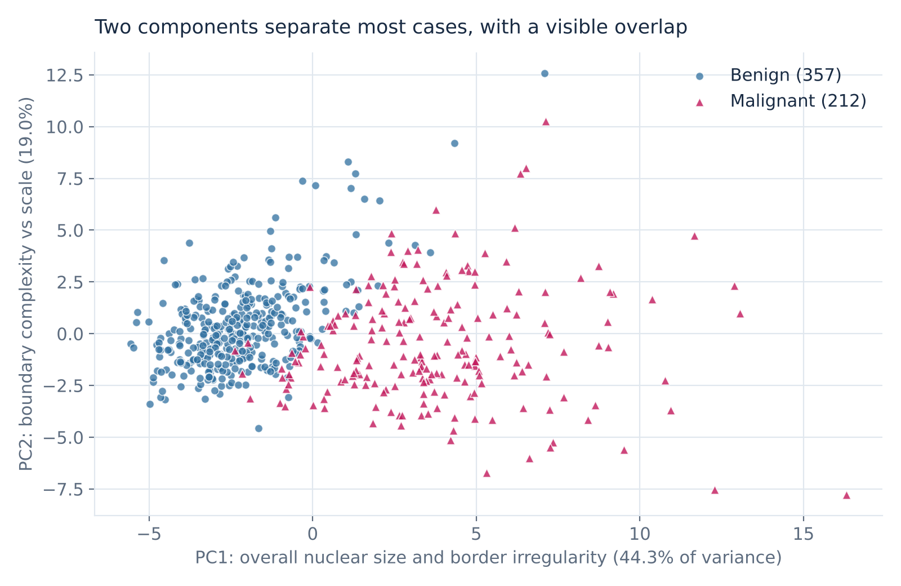

Health analytics · Analytical proof of concept
Compressing 30 biopsy measurements into 7 signals for breast cancer triage
Not clinically validated. This study uses a public research dataset from one institution. It is not a diagnostic tool and has had no regulatory review.
Bottom line: thirty overlapping nuclear measurements carry far fewer than thirty independent signals. Seven components preserve 91% of the information, and in a cross-validated check they detected malignancy as well as all thirty features did. The value is a simpler, more stable input for triage. It is not a diagnostic.
Explore the interactive dashboard ↗
Project objective
Show whether 30 overlapping biopsy measurements can be reduced to a much smaller set of inputs without losing the ability to detect malignancy, and prove it on cases the model has not seen.
| Question | How this study answers it |
|---|---|
| Why reduce dimensions at all? | With 30 measurements per case, many say the same thing twice. Redundant inputs make models unstable and results hard to read. Reducing them keeps the signal and drops the repetition. |
| Select or generate? | Feature selection keeps a few of the original measurements. Feature generation builds new combined measures from all of them. Both are tested here at the same size: seven inputs. |
| When is PCA the right tool? | When inputs are strongly correlated and a compact, non-overlapping summary is worth more than keeping each original measurement readable. It is the feature generation method used here. |
| How do we know it holds on new cases? | Ten-fold cross-validation. Every case is held out once and scored by a model that never saw it. |
| Can it be used? | The results sit in a SQL warehouse and an interactive dashboard, so a reviewer can query and compare the options directly. |
1. Clinical and operational challenge
A breast fine needle aspirate produces a slide of cell nuclei. Image analysis turns each case into 30 numbers: ten nuclear characteristics, each reported as a mean, a standard error and a worst value. Those 30 numbers create two problems for anyone building decision support on top of them.
- They repeat each other. Radius, perimeter and area describe the same thing three ways. Of the 435 possible feature pairs, 21 are correlated above 0.9 and 44 above 0.8. Models fed this redundancy produce unstable weights that are hard to explain and harder to govern.
- They cannot be seen. No reviewer can scan 30 columns per case across a worklist. Without a compact summary, prioritization defaults to arrival order.
The operational question: can the measurements be compressed into a handful of independent signals that keep the clinically relevant variation and can support a prioritized review queue?
2. Unsupervised analytical architecture
The workflow has five steps. The diagnosis is set aside at the start and is not used until the components are finished.
- Load and audit569 cases, 30 measurements, no missing values
- StandardizeEvery measurement on one scale, so none dominates by size alone
- CompressPCA finds the main directions of variation, diagnosis withheld
- ExamineCase map on two components; variance curve to choose how many to keep
- InterpretTrace each component back to the named measurements that drive it
The method never sees the diagnosis.Any separation between malignant and benign cases is something the analysis found in the measurements. It was not built to produce it.
What compression buys
- 7 inputs in place of 30
- Signals that no longer repeat each other
- Every case visible on a single chart
What it costs
- A component is a blend with no direct clinical meaning
- Scores must be mapped back to named measurements before a clinician acts on them
Steps and controls
| Step | Action | Control |
|---|---|---|
| 1. Ingest | 569 cases, 30 continuous features, 212 malignant and 357 benign | Completeness check: 0 missing values |
| 2. Withhold the diagnosis | The malignant or benign label is removed before any fitting | PCA never sees the outcome, so the components cannot be shaped by it |
| 3. Standardize | Z-score every feature to mean 0, standard deviation 1 | Stops large-scale measures such as area and perimeter from drowning out fine-scale measures such as smoothness and fractal dimension |
| 4. Decompose | PCA on the standardized matrix | Components are ordered by variance explained and are uncorrelated by construction |
| 5. Select | Cumulative variance curve, 90% retention threshold | Component count is chosen from variance alone, without reference to the diagnosis |
| 6. Interpret | Loadings map each component back to the original measurements | Every component can be traced to named pathology features |
| 7. Compare to diagnosis | Labels are reintroduced only to describe how the components relate to outcome | Evaluation step only; nothing is refitted |
Leakage control for the next phase: in the exploratory analysis the scaler and PCA were fitted on all 569 cases. For any predictive model, both must be refitted inside each training fold. The supervised check in section 3 does this.
How cross-validation was used
A model tested on the cases it learned from will always look good. K-fold cross-validation removes that advantage. The 569 cases are split into 10 equal parts, called folds, each with the same mix of malignant and benign cases. The model trains on nine folds and is tested on the tenth. This repeats ten times, so every case is tested exactly once by a model that never saw it.
- Preparation is refitted every round. Scaling, PCA and feature selection are learned from the nine training folds only, then applied to the held-out fold.
- Results are pooled across folds. The figures below count all 212 malignant cases, each scored once.
- Fold-to-fold variation is reported, not hidden. Each fold holds about 21 malignant cases, so a single miss moves that fold by about 5 points. Sensitivity for 7 components ranged from 76.2% to 100% across folds.
Data layer: a SQL warehouse
Every measurement, component score, loading and fold result is loaded into a SQLite database with a star schema. The comparison tables on this page come from SQL queries, and the build checks them against an independent pandas calculation before it writes any output.
| Table | Grain | Rows |
|---|---|---|
dim_case | One biopsy case, with its diagnosis | 569 |
dim_feature | One measurement: a nuclear characteristic and how it is summarized | 30 |
dim_component | One principal component, with variance explained | 30 |
dim_approach | One way of preparing model inputs | 6 |
fact_measurement | One case and one measurement: raw value and standardized value | 17,070 |
fact_loading | One component and one measurement | 900 |
fact_case_score | One case and one of the first 10 components | 5,690 |
fact_cv_fold | One approach and one fold: counts of caught, missed and false alarms | 60 |
fact_selected_feature | One selected measurement in one fold | 70 |
The comparison in section 3 comes from this query. Rates are computed from stored counts, never stored as percentages.
SELECT a.approach_name, a.n_inputs,
SUM(v.false_negatives) AS missed,
ROUND(100.0 * SUM(v.true_positives)
/ SUM(v.true_positives + v.false_negatives), 1) AS sensitivity_pct
FROM fact_cv_fold v
JOIN dim_approach a USING (approach_id)
GROUP BY a.approach_id
ORDER BY a.approach_id;View the schema · View the analysis queries · View the query results
3. Diagnostic variance and dimensionality optimization
PC1 alone captures 44.3% of total variance and PC2 a further 19.0%. Seven components are the smallest set that clears 90%.

| Components | Cumulative variance | Feature reduction | Sensitivity* | Malignant cases missed* | Operational recommendation |
|---|---|---|---|---|---|
| 2 | 63.2% | 93.3% | 92.0% | 17 of 212 | Visualization only. Use for a case map and outlier spotting. Too lossy to drive triage. |
| 5 | 84.7% | 83.3% | 94.8% | 11 of 212 | Lightweight screening. Acceptable where compute or bandwidth is tightly constrained. |
| 7 | 91.0% | 76.7% | 95.3% | 10 of 212 | Recommended baseline. Smallest set above 90% variance; matches the full feature set on sensitivity. |
| 10 | 95.2% | 66.7% | 96.2% | 8 of 212 | Higher-assurance option. Fewer misses and fewer false alarms for three more components. |
| All 30 features | 100% | 0% | 95.3% | 10 of 212 | Reference point. No detection advantage over 7 components. |
- Compression costs nothing in detection here. Seven components and thirty raw features both reach 95.3% sensitivity.
- PCA does not improve accuracy. Its contribution is a smaller, uncorrelated, more governable input.
- Ten components is a defensible alternative if the priority is fewer missed malignancies. The difference between 7 and 10 is two cases in this sample and needs confirmation on new data.
- The natural grouping is real but partial. PC1 was built without the diagnosis, yet ranking cases by PC1 alone separates malignant from benign with an AUC of 0.97. The two groups still overlap, which is why two components miss 17 cancers.
Feature selection or feature generation?
Both approaches were given the same budget of seven inputs and the same ten folds.
| Approach | What the seven inputs are | Sensitivity | Malignant cases missed | False alarms |
|---|---|---|---|---|
| Feature selection | The seven original measurements most associated with diagnosis, chosen inside each training fold | 92.9% | 15 of 212 | 10 of 357 |
| Feature generation (PCA) | Seven components, each a weighted blend of all 30 measurements | 95.3% | 10 of 212 | 8 of 357 |
| No reduction | All 30 measurements | 95.3% | 10 of 212 | 4 of 357 |
- At seven inputs, generation missed five fewer cancers than selection. It matched the full set of 30.
- Selection chose inputs that repeat each other. The same seven measurements were picked in all ten folds, and five of them describe nuclear size: mean radius, mean perimeter, worst radius, worst perimeter and worst area. The other two are concave points.
- Selection keeps what generation gives up. Its inputs are measurements a pathologist already recognises. That may be worth five cases to a clinical owner, and it is their decision to make.
- Five cases on one dataset is a small difference. It needs confirmation on new data before it drives a design choice.

4. Interpretability: translating components into pathology insight
PC1: overall nuclear size and border irregularity (44.3% of variance)
| Feature | Loading | What it measures |
|---|---|---|
| Mean concave points | 0.261 | Number of indentations in the nuclear outline |
| Mean concavity | 0.258 | Depth of those indentations |
| Worst concave points | 0.251 | Indentation count among the most abnormal nuclei |
| Mean compactness | 0.239 | Departure of the outline from a smooth circle |
| Worst perimeter | 0.237 | Outline length of the largest nuclei |
All 30 loadings on PC1 are positive. A high PC1 score means nuclei that are larger and more irregular on every dimension at once, the pattern cytopathologists associate with malignancy. This is the dominant axis of variation in the data and the one that tracks diagnosis.
PC2: boundary complexity against overall scale (19.0% of variance)
| Feature | Loading | Direction |
|---|---|---|
| Mean fractal dimension | 0.367 | Positive: more intricate, jagged outlines |
| Fractal dimension error | 0.280 | Positive |
| Worst fractal dimension | 0.275 | Positive |
| Mean radius | −0.234 | Negative: larger nuclei |
| Mean area | −0.231 | Negative |
PC2 is a contrast. A high PC2 score describes small nuclei with complex borders; a low score describes large nuclei with simpler borders. On its own it separates diagnosis weakly (AUC 0.62), so its role is to refine PC1, not to replace it.
5. Clinical governance, limitations and next-phase roadmap
Governance and risk trade-off
| Risk | Why it matters | Control |
|---|---|---|
| Loss of direct interpretability | A component score means nothing to a pathologist. A component blends all 30 measurements. | Never present a component score alone. Display the raw features that contributed most to that case's score. |
| Misuse as a diagnosis | PCA describes variation. It was never trained to detect cancer and has no error guarantee. | Position it for worklist prioritization and anomaly flagging only. Every case is still read by a clinician. |
| Silent false negatives | In the check above, 10 of 212 malignant cases fell below the cutoff at 7 components. In a triage queue those cases wait longer. | Triage reorders the queue; it never removes a case from review. Set a maximum wait regardless of score. |
| Sign-off accountability | A flag must be explainable to the clinician who acts on it. | High-risk scores are mapped back to named measurements, such as concave points and worst perimeter, for clinician sign-off. |
Limitations
- One institution, one era. The cases come from a single university hospital and were digitized in the early 1990s. Staining, imaging and case mix differ today.
- Small sample. 569 cases cannot support subgroup or rare-presentation analysis.
- Enriched prevalence. 37% of cases are malignant, far above a screening population. Predictive values would be lower in practice.
- No external validation. Every figure here is from one dataset, resampled.
- Untuned threshold. Sensitivity is reported at a default 0.5 cutoff, which is not a clinically chosen operating point.
Next-phase supervised roadmap
| Phase | Objective | Deliverable |
|---|---|---|
| 1. Sensitivity-first tuning | Minimize missed malignancies | Choose the cutoff that meets a clinician-set sensitivity target on validation folds, then report the resulting review workload |
| 2. Honest evaluation | Remove optimistic bias | Nested cross-validation with scaling, PCA and threshold selection inside the training folds |
| 3. Head-to-head comparison | Justify the compression | Repeat the selection and generation comparison at several input budgets, and add a three-measurement rule a pathologist could apply by eye |
| 4. Case-level explanation | Support sign-off | For each flagged case, list the top raw measurements driving its score |
| 5. External validation | Test transfer | Evaluation on an independent, contemporary cohort before any pilot |
| 6. Operating model | Assign ownership | Named clinical owner, drift monitoring, and a review cadence for the threshold |
The decision for leadership: this analysis shows the measurements can be safely compressed. It does not yet show that a compressed score improves turnaround or outcomes. That requires the supervised phase and a prospective pilot with clinical ownership.
Reproduce the figures
python build_case_study.py runs the PCA and the cross-validation, loads the SQLite warehouse, runs the SQL, checks it against pandas and writes the dashboard data.
Download the build script · Download the quick verification script · Source data: Breast Cancer Wisconsin (Diagnostic), UCI Machine Learning Repository